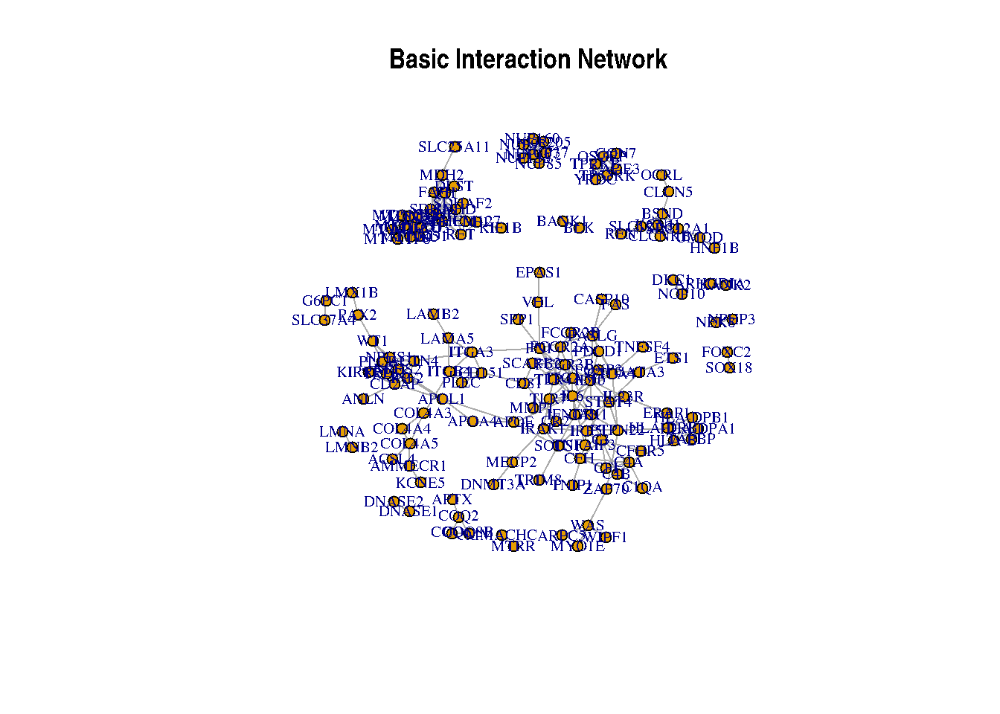
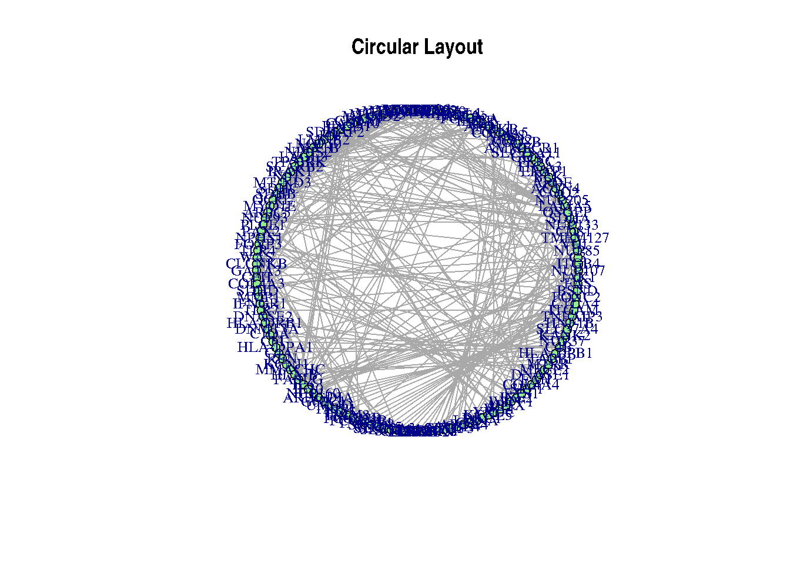
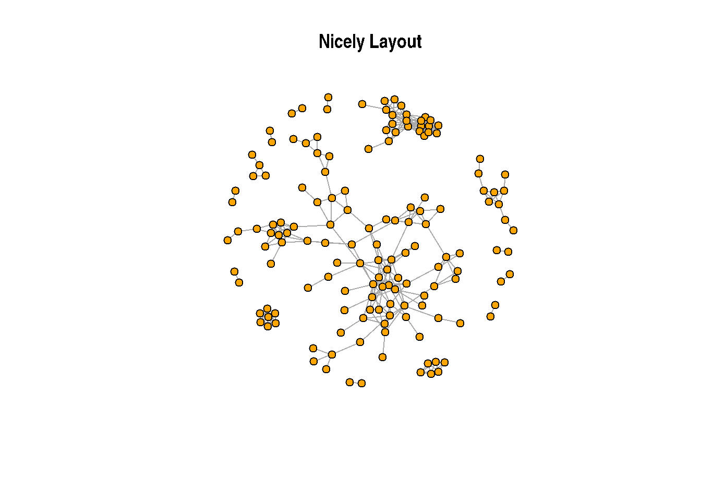
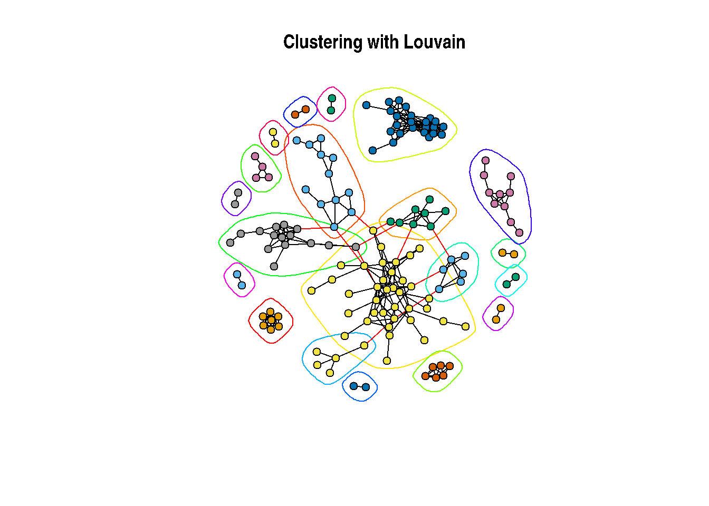
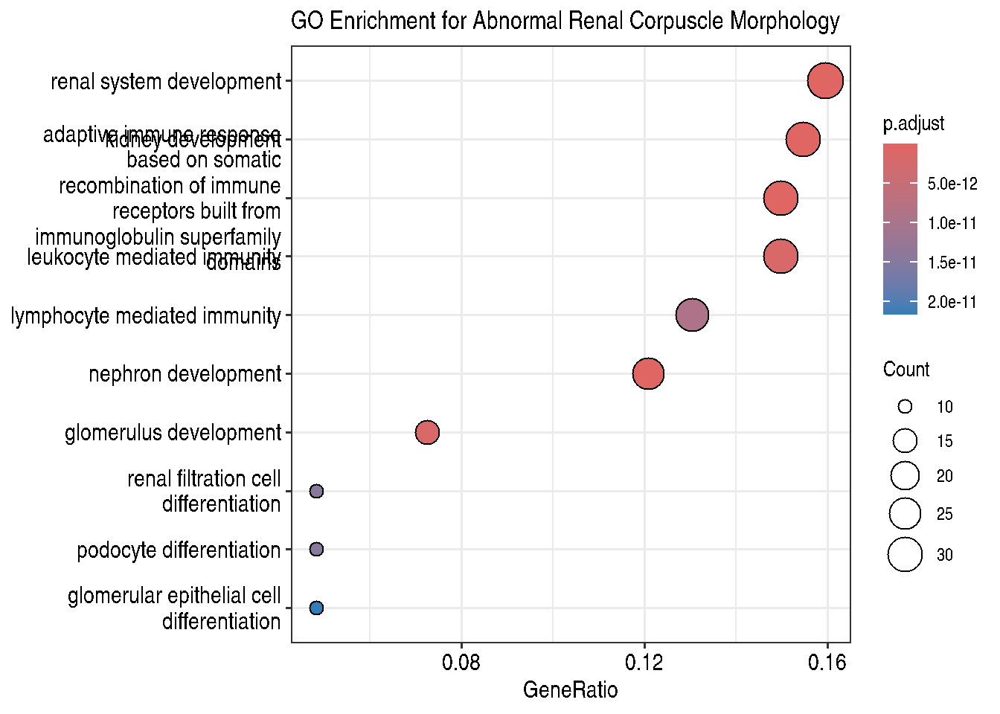
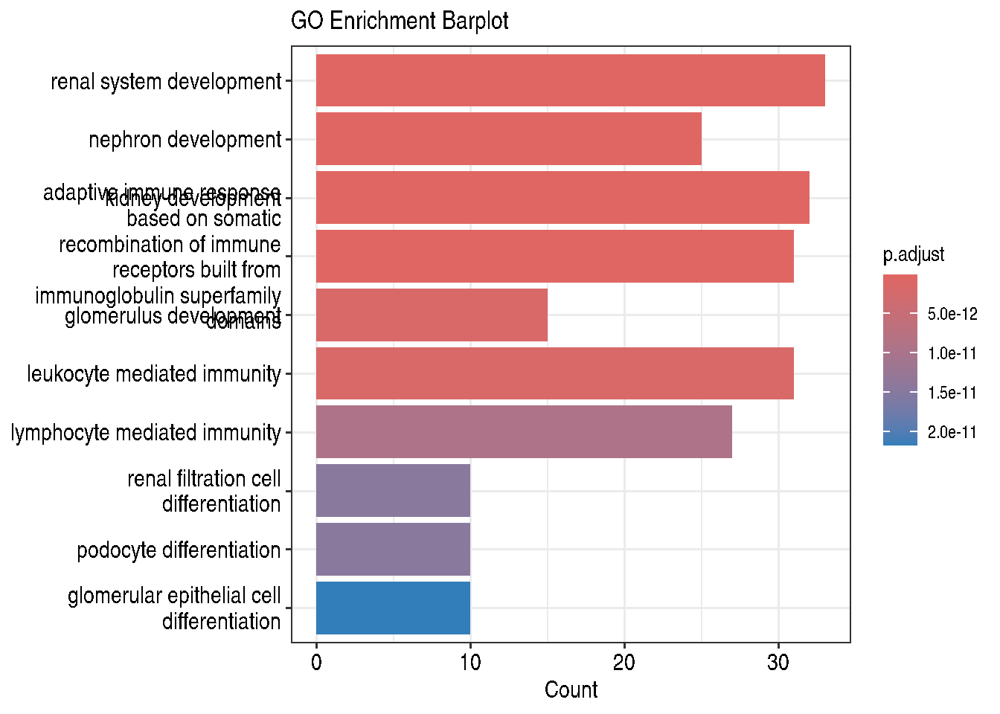

Este es un ejemplo mínimo del análisis de un término HPO utilizando técnicas de biología de sistemas para comprender mejor los mecanismos subyacentes, incluyendo los pasos más importantes en el flujo de trabajo del análisis. Comenzamos con un término HPO, “morfología anormal del corpúsculo renal”, y sugerimos procesos subyacentes importantes, como el sistema inmunológico y las vías del complemento; la mitocondria, la respiración aeróbica y la producción de ATP. Sin embargo, existen muchas formas en que se puede ampliar el análisis. Puedes cambiar el umbral de puntuación utilizado para obtener interacciones de STRINGdb, agregar genes adicionales basados en interacciones con genes asociados a fenotipos conocidos, investigar otros métodos de agrupación, explorar otras bases de datos y fuentes de anotación para el análisis de enriquecimiento, o considerar herramientas adicionales de visualización, otras metricas, etc.
Busca abnormal renal corpuscle morphology en la barra de búsqueda.
Haz clic en el fenotipo para ver los detalles.
Localiza la lista de genes asociados y descárgala en formato de texto (Export Associations).
ANOTA el codigo HPO del fenotipo, nos va a hacer falta para el siguiente paso:
Uso de la API
¿Qué es una API?
Una Interfaz de Programación de Aplicaciones (API) permite que diferentes aplicaciones de software se comuniquen entre sí. En nuestro caso, nos permite acceder programáticamente a datos de la HPO. Puedes usar una API para obtener automáticamente la lista de genes sin tener que descargarla manualmente. PUEDES USAR OTRAS LENGUAJES DE PROGAMACION SI PREFERIS
Para usar la API, aquí hay un ejemplo de cómo obtener genes programáticamente. Primero, necesitamos instalar y cargar las bibliotecas necesarias:
# Install necessary packages if not already installedif (!requireNamespace("httr", quietly =TRUE)) {install.packages("httr")}if (!requireNamespace("jsonlite", quietly =TRUE)) {install.packages("jsonlite")}library(httr)library(jsonlite)# API request to get genes associated with the HPO term for abnormal renal corpuscle morphologyhpo_id <-"HP:0031263"# HPO ID for abnormal renal corpuscle morphologyurl <-paste0("https://ontology.jax.org/api/network/annotation/", hpo_id)response <-GET(url)data <-content(response, as ="text", encoding ="UTF-8")genes <-fromJSON(data)$genes# Display the first few geneshead(genes)
id name
1 NCBIGene:396 ARHGDIA
2 NCBIGene:1286 COL4A4
3 NCBIGene:1285 COL4A3
4 NCBIGene:57728 WDR19
5 NCBIGene:3075 CFH
6 NCBIGene:254428 SLC41A1
# Display all the genes (uncomment)# print(genes)
Parte 2: Obtención de la Red de Interacción con STRINGdb
Una vez que hemos obtenido la lista de genes asociados con el fenotipo de morfología anormal del corpúsculo renal, el siguiente paso es explorar cómo estos genes interactúan entre sí. Para ello, utilizaremos la base de datos STRING (Search Tool for the Retrieval of Interacting Genes/Proteins), que proporciona información sobre las interacciones conocidas y pronosticadas entre proteínas y genes. Esta base de datos incluye información sobre interacciones de proteínas a nivel físico, funcional y de co-expresión, lo que es esencial para entender las vías biológicas y las redes de señalización involucradas en diversas condiciones fenotípicas.
Se puede usarlo con el interfaz web, sin problemas. Pero tambien existe un API.
A través de la API de STRING, podemos obtener de manera programática una red de interacción que nos ayudará a visualizar y analizar las relaciones entre los genes de interés. Utilizaremos el paquete STRINGdb en R para acceder a estas interacciones y construir la red que analizaremos posteriormente.
A continuación, aseguramos de que tienes el paquete STRINGdb instalado y luego procederemos a obtener la red de interacción.
# Install the STRINGdb package if not already installedif (!requireNamespace("STRINGdb", quietly =TRUE)) {install.packages("STRINGdb")}library(STRINGdb)# Initialize STRINGdb with the appropriate version and speciesstring_db <- STRINGdb$new(version ="12", species =9606, score_threshold =800, input_directory ="")# Fetch interactions for the gene list# Replace 'genes' with your actual gene list variablegene_ids <- genes$name # Adjust according to your downloaded data structurestring_ids <- string_db$map( genes, "name", removeUnmappedRows =TRUE )
Warning: we couldn't map to STRING 5% of your identifiers
interaction_network <- string_db$get_interactions(string_ids$STRING_id)interaction_network <-unique(interaction_network[, 1:2]) # necessary step to remove duplicate interactionsinteraction_network$to <- string_ids$name[match(interaction_network$to, string_ids$STRING_id)]interaction_network$from <- string_ids$name[match(interaction_network$from, string_ids$STRING_id)]# Display the first few rows of the interaction networkhead(interaction_network)
from to
1 NUP107 NUP85
3 ITGB4 LAMA5
5 NUP107 NUP133
7 NUP85 NUP133
9 VHL EPAS1
11 TMEM127 KIF1B
Parte 3: Conversión a Formato igraph y calculos de propiedades de una red
En esta sección, convertiremos la red de interacción obtenida de STRINGdb al formato igraph.
Primero, asegúrate de tener instalado y cargado el paquete igraph (OK - you probably already have this.. I hope!):
# Install igraph if it's not already installedif (!requireNamespace("igraph", quietly =TRUE)) {install.packages("igraph")}library(igraph)
Adjuntando el paquete: 'igraph'
The following objects are masked from 'package:stats':
decompose, spectrum
The following object is masked from 'package:base':
union
Conversión a Formato igraph
Para convertir la red de interacción que hemos obtenido de STRINGdb a un objeto igraph, utilizaremos la función graph_from_data_frame(), que permite crear una red a partir de un data frame que contiene las interacciones.
Asumamos que interaction_network tiene al menos dos columnas: gene1 y gene2, que representan los nodos conectados. La conversión se realiza de la siguiente manera:
# Convert the interaction network downloaded from STRING into igraph formatg <-graph_from_data_frame(interaction_network, directed =FALSE)
Cálculo de Propiedades de la Red
Una vez que tenemos nuestra red en formato igraph, podemos calcular diversas propiedades que nos brindan información sobre su estructura y características. A continuación, se presentan algunas propiedades importantes que puedes calcular:
Número de Nodos y Aristas
Podemos calcular el número total de nodos y aristas en la red utilizando las funciones gorder() y gsize():
# Calculate numbers of nodes and edgesnum_nodes <-gorder(g) # Number of nodesnum_edges <-gsize(g) # Number of edgescat("Number of nodes:", num_nodes, "\n")
Number of nodes: 144
cat("Number of edges:", num_edges, "\n")
Number of edges: 315
Grado Promedio de los Nodos
El grado de un nodo es el número de conexiones que tiene. Podemos calcular el grado promedio de todos los nodos en la red:
# Calculate the degree (grado) of every nodedegree_values <-degree(g)# Calculate the averageaverage_degree <-mean(degree_values)cat("Average degree of all nodes:", average_degree, "\n")
Average degree of all nodes: 4.375
Densidad de la Red
La densidad de una red es una medida que indica qué tan conectados están los nodos entre sí. Se calcula como el número de aristas dividido por el número máximo posible de aristas:
# Calculate the density of the networknetwork_density <-edge_density(g)cat("Network density:", network_density, "\n")
Network density: 0.03059441
Centralidad
La centralidad nos ayuda a identificar los nodos más importantes dentro de la red. Podemos calcular diferentes medidas de centralidad, aqui vemos centralidad de cercanía:
# Calculate Closeness Centrality (centralidad de cercanía)centrality_closeness <-closeness(g)# Show resultscat("Closeness Centrality (first 5 nodos):", head(centrality_closeness, 5), "\n")
Una vez que tenemos nuestra red en formato igraph, podemos proceder a realizar diversas visualizaciones y análisis estadísticos. La visualización es una parte crucial del análisis de redes, ya que nos ayuda a entender la distribución y la relación entre los diferentes nodos.
En esta sección, utilizaremos funciones del paquete igraph para crear gráficos visualmente informativos que representen las interacciones entre genes. Además, calcularemos estadísticas de la red, como el número de nodos e interacciones, lo que nos permitirá obtener una visión general de la complejidad y la conectividad de nuestra red. Esto es especialmente relevante en biología molecular, donde las interacciones entre genes pueden proporcionar información valiosa sobre funciones biológicas y mecanismos de enfermedades.
Gráfico Básico
# Basic plot of the networkplot(g, vertex.size=5, vertex.label.cex=0.7, edge.arrow.size=0.5, main="Basic Interaction Network")

Visualizaciones Personalizadas
Graficado en base a atributo de nodo
# Basic plot of the networkplot(g, vertex.size=degree(g)/2, edge.arrow.size=0.7, vertex.label.cex=0.8, main="Network by degree")
# Help page access# ?layout_in_circle # Recuerda cómo acceder a las páginas de ayuda (commented)# Plot with circular layoutcircular_layout <-layout_in_circle(g)plot(g, layout = circular_layout, vertex.color ="lightgreen", vertex.size =5, vertex.label.cex=0.8,edge.width =0.5, main ="Circular Layout")

Without labels to better see the structure
set.seed(123)plot(g, vertex.color ="orange", vertex.size =5,vertex.label=NA, edge.width =0.5, main ="Nicely Layout")

Parte 5: Clustering de la Red con igraph
¿Qué es el clustering?
El clustering en redes es el proceso de identificar grupos de nodos (genes, en este caso) que están más densamente conectados entre sí que con otros nodos de la red. Este enfoque permite detectar módulos o clusters, que pueden representar vías de señalización o grupos funcionales de genes que operan juntos.
g <-graph_from_data_frame(interaction_network, directed =FALSE)cluster_louvain <-cluster_louvain(g)set.seed(123)plot(cluster_louvain, g, vertex.size=5, vertex.label=NA, edge.arrow.size=0.2, main="Clustering with Louvain")

Parte 6: Enriquecimiento Funcional
Introducción al Análisis de Enriquecimiento Funcional
El análisis de enriquecimiento funcional es un conjunto de técnicas bioinformáticas diseñadas para identificar características funcionales, rutas o procesos biológicos que están representados en exceso dentro de un conjunto de genes de interés. Estas técnicas son fundamentales para ayudar a los investigadores a interpretar grandes cantidades de datos genómicos y transcriptómicos al descubrir las funciones moleculares y procesos biológicos que son importantes en condiciones experimentales específicas, como enfermedades o tratamientos.
Cuando se estudia un conjunto de genes, ya sea obtenido a partir de datos de expresión diferencial, variantes genéticas, o cualquier otra fuente, el análisis de enriquecimiento nos permite responder preguntas como: ¿Qué procesos biológicos están sobrerrepresentados en este conjunto de genes? o ¿Qué funciones moleculares pueden estar relacionadas con el fenotipo de interés?
Existen distinto metodos para este proposito, uno muy usado es el Análisis de Sobrerrepresentación (Over-Representation Analysis, ORA):
Propósito: Determinar si ciertas funciones biológicas (por ejemplo, términos de Gene Ontology (GO), rutas de KEGG) están sobrerrepresentadas en un conjunto de genes de interés en comparación con un conjunto de fondo o referencia. Método: Se utiliza una prueba estadística (como la prueba exacta de Fisher) para evaluar si la frecuencia observada de un término es mayor de lo esperado al azar en el conjunto de interés.
clusterProfiler ofrece la función enrichGO para realizar el análisis de Sobrerrepresentación para obtener enriquecimiento basado en términos de GO. Vamos a ejecutarlo sobre nuestros genes de interés.
if (!requireNamespace("clusterProfiler", quietly =TRUE)) BiocManager::install("clusterProfiler")
if (!requireNamespace("org.Hs.eg.db", quietly =TRUE)) BiocManager::install("org.Hs.eg.db")
library(clusterProfiler)
clusterProfiler v4.12.6 Learn more at https://yulab-smu.top/contribution-knowledge-mining/
Please cite:
Guangchuang Yu, Li-Gen Wang, Yanyan Han and Qing-Yu He.
clusterProfiler: an R package for comparing biological themes among
gene clusters. OMICS: A Journal of Integrative Biology. 2012,
16(5):284-287
Adjuntando el paquete: 'clusterProfiler'
The following object is masked from 'package:igraph':
simplify
The following object is masked from 'package:stats':
filter
library(org.Hs.eg.db) # Base de datos de genes humanos
Cargando paquete requerido: AnnotationDbi
Cargando paquete requerido: stats4
Cargando paquete requerido: BiocGenerics
Adjuntando el paquete: 'BiocGenerics'
The following objects are masked from 'package:igraph':
normalize, path, union
The following objects are masked from 'package:stats':
IQR, mad, sd, var, xtabs
Welcome to Bioconductor
Vignettes contain introductory material; view with
'browseVignettes()'. To cite Bioconductor, see
'citation("Biobase")', and for packages 'citation("pkgname")'.
Adjuntando el paquete: 'Biobase'
The following object is masked from 'package:httr':
content
Cargando paquete requerido: IRanges
Cargando paquete requerido: S4Vectors
Adjuntando el paquete: 'S4Vectors'
The following object is masked from 'package:clusterProfiler':
rename
The following object is masked from 'package:utils':
findMatches
The following objects are masked from 'package:base':
I, expand.grid, unname
Adjuntando el paquete: 'IRanges'
The following object is masked from 'package:clusterProfiler':
slice
Adjuntando el paquete: 'AnnotationDbi'
The following object is masked from 'package:clusterProfiler':
select
# Execute ORA enrichment analysisenrich_results <-enrichGO(gene = genes$name, # Set of genes of interest (from HPO in this case)OrgDb = org.Hs.eg.db, # Gene annotation databasekeyType ="SYMBOL", # Type of gene identification (here, gene symbols)ont ="BP", # Ontology (BP: biological processes)pAdjustMethod ="BH", # Method for p-value adjustmentpvalueCutoff =0.05, # Significance threshold for p-valueqvalueCutoff =0.2# Significance threshold for q-value)# Mostrar resultadoshead(enrich_results)
En la tabla, las filas son terminos GO, y los de mas columnas son propiedades importantes
Visualización de los Resultados de Enriquecimiento
clusterProfiler permite visualizar términos GO enriquecidos con dotplot y barplot.
if (!requireNamespace("enrichplot", quietly =TRUE)) BiocManager::install("enrichplot")library(enrichplot)# Dotplot to visualize enriched GO termsdotplot(enrich_results, showCategory =10, title ="GO Enrichment for Abnormal Renal Corpuscle Morphology")

# Barplot as an alternativebarplot(enrich_results, showCategory =10, title ="GO Enrichment Barplot")

También podemos exportar los resultados a CSV o visualizarlos en tablas.
# Convert results to data frame and export to CSVwrite.csv2(as.data.frame(enrich_results), file ="GO_Enrichment_Abnormal_Renal_Corpuscle.csv", row.names =FALSE)
Análisis de Enriquecimiento en Clusters de una Red
Cuando trabajamos con redes de genes, el análisis de enriquecimiento funcional puede aplicarse a clusters individuales para identificar funciones únicas en cada grupo de genes.
Para realizar un Análisis de Enriquecimiento en Clusters de una Red en R, partiremos tambien de la red STRINGdb del termino HPO “abnormal renal corpuscle morphology” que ya ha sido agrupada en diferentes clusters (por ejemplo, usando el algoritmo de Louvain en una sección previa). Esto permite aplicar análisis de enriquecimiento a cada uno de los clusters obtenidos para identificar funciones biológicas o rutas moleculares específicas asociadas con cada grupo de genes.
Extracción de Genes de Clusters para Análisis de Enriquecimiento
Asignación de Clusters a los Nodos: Partimos de un grafo en el que cada nodo ya tiene asignado un número de cluster.
Extracción de Genes por Cluster: Utilizamos una función para extraer los genes de cada cluster.
El siguiente código ilustra cómo extraer los genes de cada cluster en el grafo previamente agrupado del termino HPO.
set.seed(123)cluster_membership <-membership(cluster_louvain(g)) # Louvain clustering on the graph# Split genes by clustergenes_clusters <-split(V(g)$name, cluster_membership) # Names of genes by cluster# Look at the genes in each cluster. What pathways/GO terms do you think might be enriched?print(genes_clusters)
Aplicación del Análisis de Enriquecimiento ORA en Cada Cluster
Con los genes divididos por clusters, aplicaremos el análisis de enriquecimiento Over-Representation Analysis (ORA) en cada uno. Esto permite identificar procesos biológicos o funciones moleculares específicas para los genes de cada grupo. Usaremos el paquete clusterProfiler y nos enfocaremos en el análisis de enriquecimiento GO.
# Initialize an empty list to store enrichment results for each clusterenrichment_results_clusters <-list()# Loop over each cluster to perform enrichment analysisfor (i inseq_along(genes_clusters)) {# cat(i, "\n")# Perform GO enrichment for the current cluster enrichment_results_clusters[[i]] <-enrichGO(gene = genes_clusters[[i]], # Set of genes for the current clusterOrgDb = org.Hs.eg.db, # Database for gene annotationkeyType ="SYMBOL", # Identifier type (e.g., gene symbols)ont ="BP", # Ontology (BP: Biological Process)pAdjustMethod ="BH", # Method for p-value adjustmentpvalueCutoff =0.05, # Significance threshold for p-valueqvalueCutoff =0.2# Significance threshold for q-value )}# Visualize results for the first cluster as an exampledotplot(enrichment_results_clusters[[1]], showCategory =10, title ="GO Enrichment for Cluster 1")
# Save enrichment results to CSV files for each clusterfor (i inseq_along(enrichment_results_clusters)) {write.csv2(as.data.frame(enrichment_results_clusters[[i]]), # Convert to data frame for savingfile =paste0("enrichment_cluster_", i, ".csv") # File name based on cluster index )}